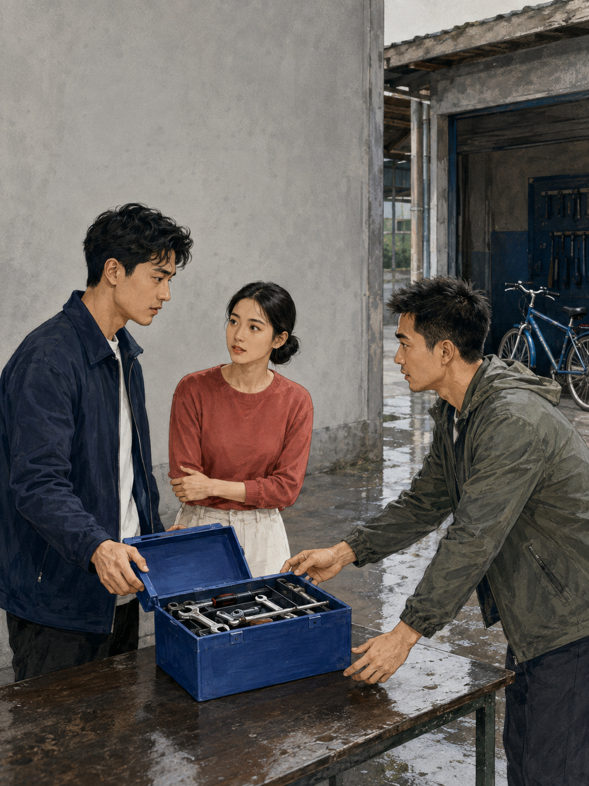
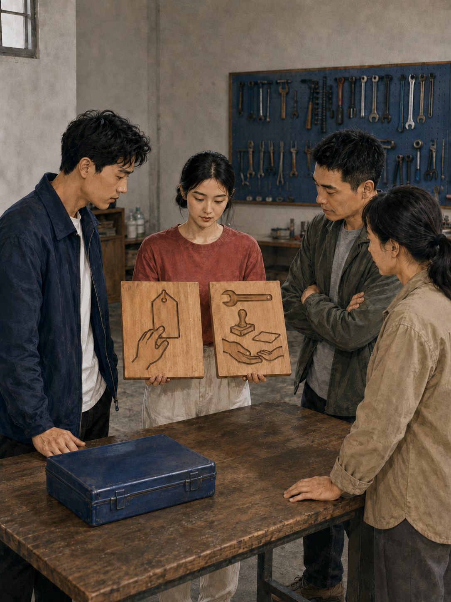
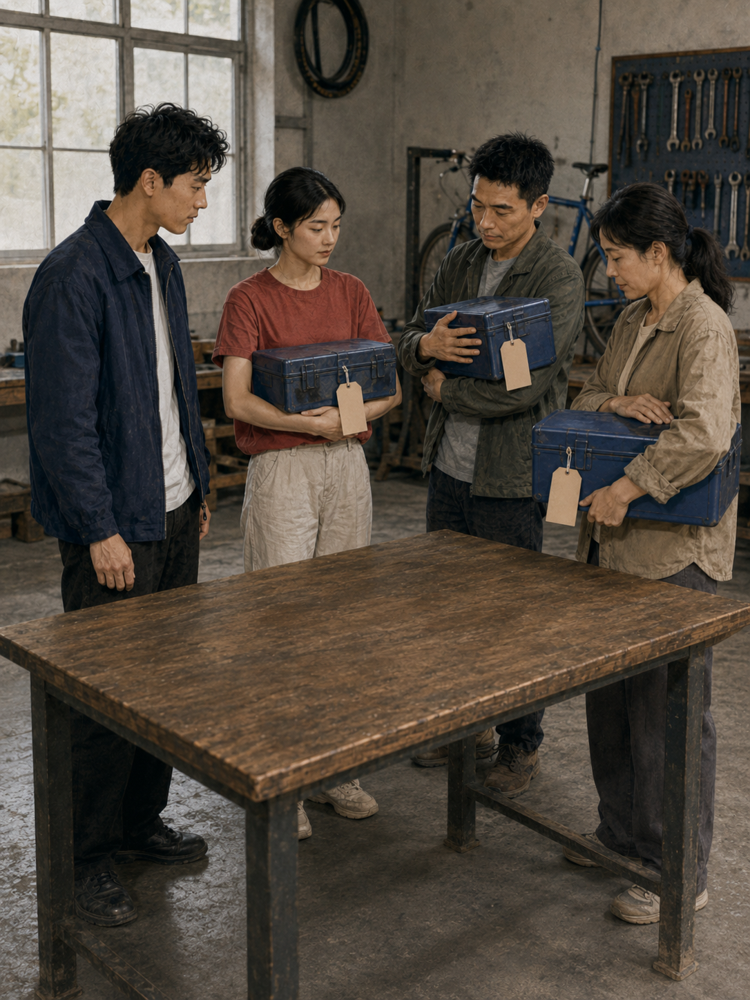
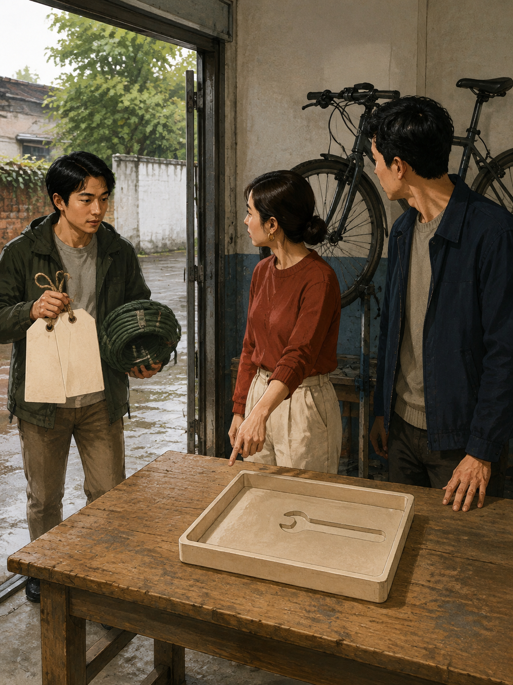
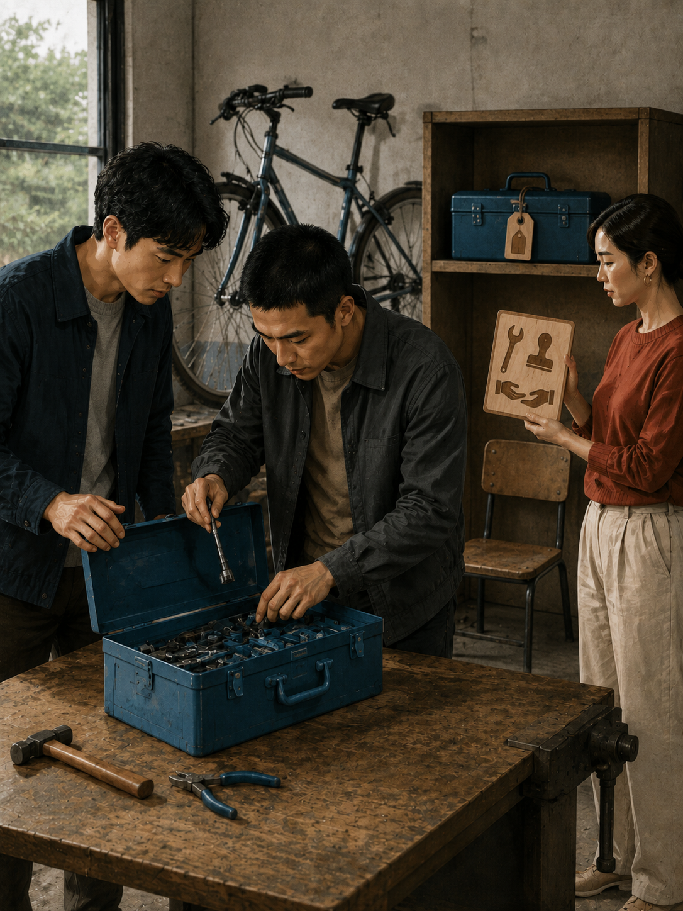
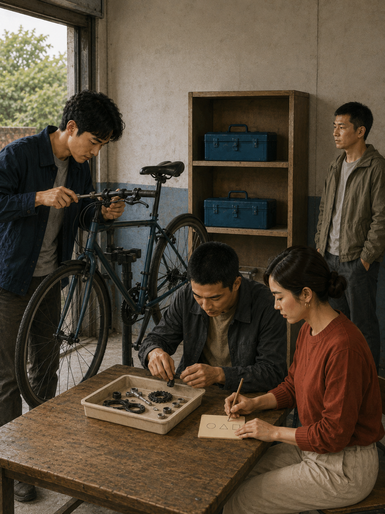
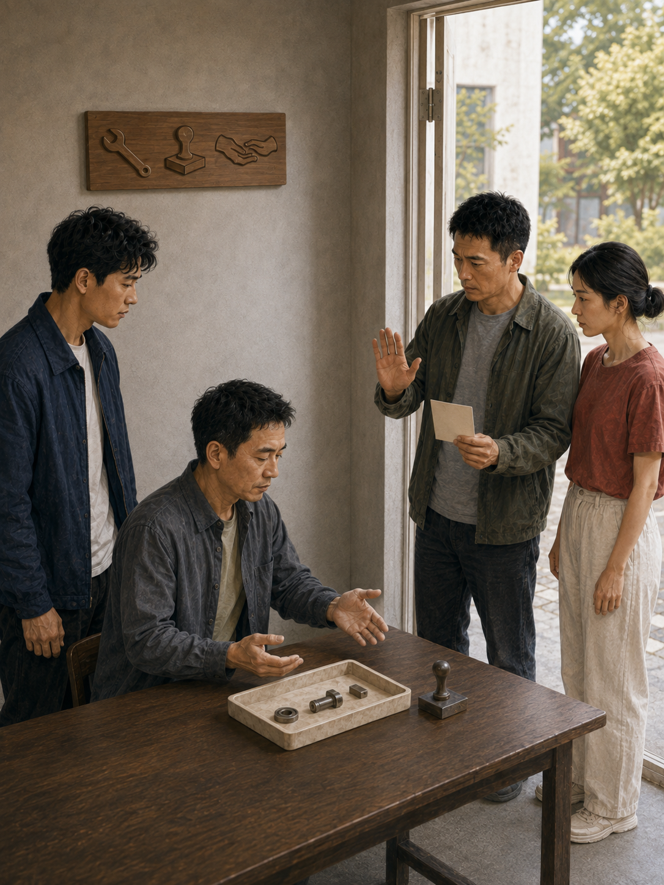

CARD 01 · 眼前争议
谁先拿走这只工具箱？
旁白暴雨过后，阿衡把零散工具装成一箱；还没检验完，另一只手已经伸了过来。
- 居民：我先看见，也先认领。
- 阿衡：可组装和检验还没结束。
薛兆丰经济学课 · LESSON 002 情景演绎
一只工具箱引发争议。阿衡和小禾没有急着选赢家，而是把规则当成可观察的试验：它会奖励什么，又会让后来者把力气花在哪里？
基于经济学概念的原创情景化演绎。规则牌只表示试行条件、责任与证明入口，不代表价格、法院判决、现行法或普遍结论。

CARD 01 · 眼前争议
旁白暴雨过后，阿衡把零散工具装成一箱；还没检验完，另一只手已经伸了过来。

CARD 02 · 冻结候选
旁白小禾摆出两种试行条件：先挂吊牌，或者完成组装与检验后，在交接窗口内持有。

CARD 03 · 即时激励
旁白吊牌越来越醒目，守箱的人越来越多；真正补工具、做检验的人却少了。

CARD 04 · 适应规则
旁白新来的人带来锁绳和更大的牌子，不是缺失的扳手。规则正在改变他们的投入。

CARD 05 · 替代规则与反例
旁白完成组装和检验的人开始增加；但有人错过交接，一只工具箱又被长期占住。

CARD 06 · 积累与持续成本
旁白交接窗口和复核入口明确后，工具箱进入共享架；登记、保养与申诉仍占用时间。

CARD 07 · 权利与程序
旁白他们核对零件、检验和通知记录，也允许拒绝签收、提出异议，再决定是否继续试行。
规则不只分配眼前的工具箱，也会改变人们之后愿意完成、保护、维护与证明什么。但效率推演只是一种分析入口：反例、交易成本、异议、拒绝与法域差异，仍要在程序中单独处理。